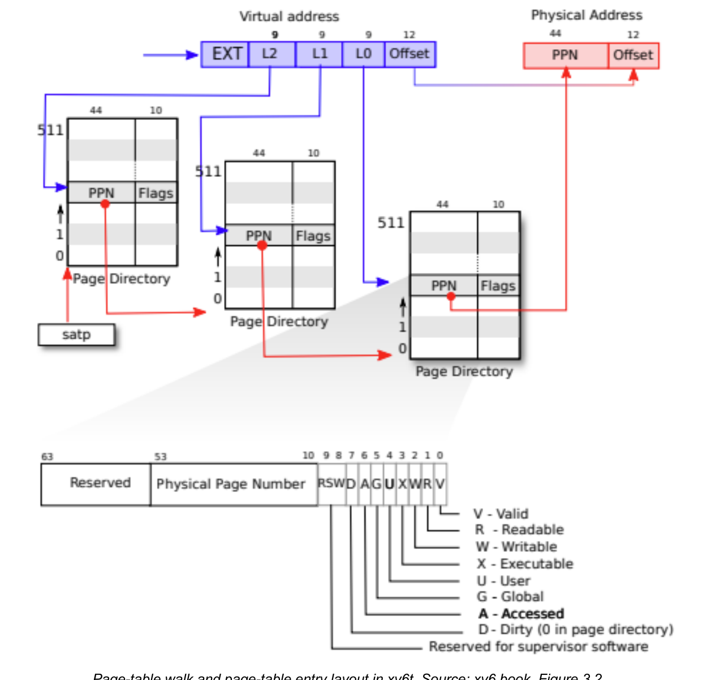

Lab 4: Page Tables and Lazy Allocation
Modern operating systems decouple virtual memory addresses referenced by executing software from the underlying physical RAM addresses managed by hardware. This virtualization enables memory protection, process isolation, and dynamic memory growth.
Lab 4 explores the RISC-V Sv39 multi-level paging architecture in xv6:
- Sv39 Virtual Memory Translation: Understanding the
3-level page table walk, Page Table Entry (PTE) bits, and page
translation software primitives (
walk()andwalkaddr()). - Virtual vs. Physical Memory Accounting:
Implementing
countvp()andcountpp()system calls to measure virtual page reservations versus allocated physical frames. - Trap Architecture & Page Fault Inspection:
Tracing page faults via RISC-V hardware registers (
scause,sepc,stval) and the trampoline switching mechanism. - Lazy Heap Allocation: Redesigning
sbrk()to lazily defer physical frame allocation until the process touches memory, handling page faults transparently.

1. RISC-V Sv39 Virtual Memory Architecture
RISC-V uses the Sv39 paging scheme: virtual addresses are 39 bits wide, mapping into a 56-bit physical address space.
Address Decomposition
A page is . The bottom 12 bits form the page offset, while the upper 27 bits form the Virtual Page Number (VPN):
38 30 29 21 20 12 11 0
┌──────────────┬──────────────┬──────────────┬─────────────────────────┐
│ VPN[2] │ VPN[1] │ VPN[0] │ Page Offset │
│ (9 bits) │ (9 bits) │ (9 bits) │ (12 bits) │
└──────────────┴──────────────┴──────────────┴─────────────────────────┘- PTE Size: In 64-bit RISC-V (Sv39), each Page Table Entry (PTE) occupies 64 bits ().
- Table Capacity: Each physical page table occupies exactly one () physical frame, accommodating:
- Index Width: Because each table holds entries, each translation level requires exactly to index one PTE.
- Tree Depth: 3 levels of 9-bit indices (, , ) consume . Adding the 12-bit offset yields of virtual address space ().
- Root Table: The hardware
satp(Supervisor Address Translation and Protection) register holds the physical base frame address of the root (Level-2) page table.
Page Table Entry (PTE) Format & Flags
A 64-bit Sv39 PTE is structured as follows:
63 54 53 10 9 8 7 6 5 4 3 2 1 0
┌──────────────┬──────────────────────────────────────────────┬─────┬─┬─┬─┬─┬─┬─┬─┬─┐
│ Reserved │ Physical Page Number (PPN) │ RSW │D│A│G│U│X│W│R│V│
│ (10 bits) │ (44 bits) │(2b) │ │ │ │ │ │ │ │ │
└──────────────┴──────────────────────────────────────────────┴─────┴─┴─┴─┴─┴─┴─┴─┴─┘- Bits 63–54 (10 bits): Reserved for supervisor software and future architecture extensions.
- Bits 53–10 (44 bits): Physical Page Number (PPN). Holds the physical frame number in RAM.
- Bits 9–8 (2 bits): Reserved for Supervisor Software
(
RSW). - Bits 7–0 (8 bits): Hardware control flags:
| Flag | Meaning when Set (1) |
|---|---|
PTE_V |
Valid: Entry is active and present. If
0, any memory access through this PTE triggers a page
fault. |
PTE_R |
Read: Page can be read. |
PTE_W |
Write: Page can be written. |
PTE_X |
Execute: Page contains executable CPU instructions. |
PTE_U |
User: Page is accessible in User Mode. If
0, only Supervisor (Kernel) Mode can access it. |
Leaf vs. Intermediate PTEs: A valid PTE with
PTE_R,PTE_W, andPTE_Xall set to0is an intermediate pointer pointing to the physical address of the next-level page table. A PTE with any of set is a leaf entry pointing to physical RAM data.
Physical Address Decomposition & Translation Flow
RISC-V physical addresses are 56 bits wide, structured identically to the leaf PTE’s PPN combined with the original virtual page offset:
55 12 11 0
┌─────────────────────────────────────────────────────────────┬─────────────────────────┐
│ Physical Page Number (PPN) │ Page Offset │
│ (44 bits) │ (12 bits) │
└─────────────────────────────────────────────────────────────┴─────────────────────────┘- Bits 55–12 (44 bits): Physical Page Number (PPN), addressing up to physical frames.
- Bits 11–0 (12 bits): Page Offset, addressing within each frame.
- Total Physical Address Space: ().
The complete translation path from Virtual Address through the Leaf PTE to Physical Address maps as:
Virtual Address (39 bits):
38 30 29 21 20 12 11 0
┌──────────────┬──────────────┬──────────────┬─────────────────────────┐
│ VPN[2] │ VPN[1] │ VPN[0] │ Page Offset │
│ (9 bits) │ (9 bits) │ (9 bits) │ (12 bits) │
└───────┬──────┴───────┬──────┴───────┬──────┴────────────┬────────────┘
│ │ │ │
│ Root (L2) │ Middle (L1) │ Leaf (L0) │
▼ ▼ ▼ │ (Direct copy)
Leaf Page Table Entry (PTE, 64 bits): │
63 54 53 10 9 0 │
┌──────────────┬──────────────────────────────────────────────┬───────┐│
│ Reserved │ Physical Page Number (PPN) │ Flags ││
│ (10 bits) │ (44 bits) │(10 b) ││
└──────────────┴──────────────────────┬───────────────────────┴───────┘│
│ │
▼ PTE2PA(*pte) (PPN << 12) │
Physical Address (56 bits): │
55 12 11 ▼ 0
┌─────────────────────────────────────────────────────────────┬─────────────────────────┐
│ Physical Page Number (PPN) │ Page Offset │
│ (44 bits) │ (12 bits) │
└─────────────────────────────────────────────────────────────┴─────────────────────────┘2. Kernel Paging
Primitives: walk() and walkaddr()
The kernel frequently navigates page tables in software using two
foundational primitives in kernel/vm.c:
1. walk():
3-Level Software Page Table Walk
walk() mimics hardware MMU translation in software,
returning a pointer to the Level-0 PTE corresponding to a virtual
address:
pte_t *walk(pagetable_t pagetable, uint64 va, int alloc) {
if (va >= MAXVA)
panic("walk");
for (int level = 2; level > 0; level--) {
pte_t *pte = &pagetable[PX(level, va)];
if (*pte & PTE_V) {
pagetable = (pagetable_t)PTE2PA(*pte); // Traverse to next-level table
} else {
if (!alloc || (pagetable = (pde_t*)kalloc()) == 0)
return 0;
memset(pagetable, 0, PGSIZE);
*pte = PA2PTE(pagetable) | PTE_V; // Mark intermediate table pointer valid
}
}
return &pagetable[PX(0, va)]; // Returns address of Level-0 Leaf PTE
}Code Tracing & Key Primitives:
PX(level, va): Macro extracting the 9-bit VPN index for that level:PX(2, va): bits 38–30 (Root Level-2 index).PX(1, va): bits 29–21 (Middle Level-1 index).PX(0, va): bits 20–12 (Leaf Level-0 index).
- Intermediate Table Traversal (
level = 2down to1):- If
*pte & PTE_Vis set: the intermediate page table already exists. The macroPTE2PA(*pte)extracts the physical frame address of the child table, and execution advances downward. - If
*pte & PTE_Vis0: the intermediate page table is absent.- If
alloc == 0:walk()stops immediately and returns0(used for non-destructive inspection). - If
alloc != 0:walk()allocates a fresh frame viakalloc(), zeroes it withmemset(), sets*pte = PA2PTE(pagetable) | PTE_V, and continues walking.
- If
- If
- Leaf Return (
level = 0): Returns the memory address of the Level-0 PTE (&pagetable[PX(0, va)]).
2.
walkaddr(): User-Virtual to Physical Address
Translation
When a user process passes a virtual pointer to a kernel system call
(such as a buffer address to read() or
write()), the kernel must translate the user virtual
address to a physical memory address while enforcing strict access
control:
uint64 walkaddr(pagetable_t pagetable, uint64 va) {
pte_t *pte;
uint64 pa;
if (va >= MAXVA)
return 0;
pte = walk(pagetable, va, 0);
if (pte == 0)
return 0;
if ((*pte & PTE_V) == 0)
return 0;
if ((*pte & PTE_U) == 0)
return 0;
pa = PTE2PA(*pte);
return pa;
}Step-by-Step Execution Trace:
- Boundary Check (
va >= MAXVA): Validates thatvadoes not exceed the allowed user virtual address range (). - Read-Only Walk
(
walk(pagetable, va, 0)): Callswalk()withalloc = 0. If any intermediate page table is missing,walk()returns0, causingwalkaddr()to safely return0(translation failed). - Presence Verification
(
*pte & PTE_V): Ensures the Level-0 leaf PTE is valid and backed by physical RAM. - Security & Permission Check
(
*pte & PTE_U): Confirms that the page has the User Mode flag (PTE_U) set. This prevents malicious user programs from tricking the kernel into reading or writing kernel-private data or unmapped guard pages via system calls. - Physical Address Extraction
(
PTE2PA(*pte)): Shifts the 44-bit PPN left by 12 bits to retrieve the physical base address of the frame.
[!WARNING] Why
countpp()Must NOT Usewalkaddr(): In Part 2,countpp()counts all physical frames allocated to the process address space. In xv6, the stack guard page has a physical frame allocated withPTE_Vset, but itsPTE_Uflag is intentionally cleared to prevent user access. Ifcountpp()invokedwalkaddr(), it would fail at(*pte & PTE_U) == 0and skip the guard page, incorrectly undercounting allocated physical frames by 1. Therefore,countpp()must callwalk(p->pagetable, va, 0)directly and inspect only(*pte & PTE_V).
3. Process Memory Layout & Allocation Models
Architectural Context: How an xv6 Process Address Space is Formed
In xv6, memory isolation is enforced using two types of page tables:
- Kernel Page Table (
kernel_pagetable): A single global page table used whenever the CPU executes in Supervisor Mode running kernel C code. It maps physical RAM directly, memory-mapped I/O devices (e.g. UART, virtio disk, PLIC), and kernel stacks. - User Page Table (
p->pagetable): Each running process (struct proc *p) maintains its own private page table. It defines the process’s virtual memory universe from virtual address0up toMAXVA. User code and variables reside here; kernel internal data structures are excluded so user code cannot access them.
1. Creation and ELF Loading
(exec())
When a program is executed (such as the shell running ls
or user/fault), the kernel invokes the exec()
system call:
- Text & Data (Starting at
0):exec()reads the executable ELF binary from disk, allocates physical frames viauvmalloc(), and maps the program’s machine instructions (.text) and static variables (.data) starting at virtual address0. - The Guard Page: Directly above the program data,
exec()allocates a 1-page guard slot. A physical frame is allocated (PTE_Vset), but itsPTE_Uflag is left cleared (0). If the user stack overflows downward, the CPU attempts to touch this guard page in User Mode; becausePTE_Uis missing, the MMU immediately triggers a page fault exception, terminating the program before it can silently corrupt program code or variables. - The User Stack: Exactly one page allocated directly above the guard page.
- The Program Break (
p->sz): Tracks the current upper boundary of the user address space. Initially,p->szpoints to the top of the user stack.
2. Dynamic Heap Growth via
sbrk()
User programs dynamically allocate memory at runtime using library
routines like malloc(). In Unix and xv6,
malloc() requests memory from the OS kernel via the
sbrk(n) system call:
- When called with
,
sbrk()raises the program breakp->szby bytes. The heap occupies the dynamic region between the original stack top andp->sz. - When called with
,
sbrk()contractsp->sz, freeing heap pages back to the kernel.
3. High-Memory Fixed Mappings: Trapframe and Trampoline
When a trap (system call, interrupt, or page fault) occurs in user
space, the CPU switches privilege mode from User Mode to Supervisor
Mode. Crucially, the CPU hardware does NOT switch page tables
automatically. It enters Supervisor Mode with satp
still pointing to the process’s User Page Table
(p->pagetable).
To allow the kernel to execute entry code and switch page tables
without crashing, the kernel permanently reserves and maps two pages at
the very ceiling of every address space near MAXVA =
():
TRAPFRAME(MAXVA - 2 * PGSIZE): A private page for each process that stores its 31 saved user registers during a mode switch. It is mapped withPTE_R | PTE_Wbut noPTE_U, meaning User Mode code cannot read or alter it, but kernel entry code can read/write it whilesatpis still pointing top->pagetable. (In the kernel, each process’s trapframe is accessed via its direct kernel pointerp->trapframe).TRAMPOLINE(MAXVA - PGSIZE): Contains the mode-switching assembly code (uservecanduserret). It is mapped withPTE_R | PTE_X(noPTE_U) at the identical virtual address (MAXVA - PGSIZE) in both the User Page Table and the Kernel Page Table, mapping to the exact same physical RAM frame.
Why
Identical Virtual Addresses? (The satp &
pc Handover)
Why must TRAMPOLINE share the same virtual address in
both tables while other components do not?
Consider what happens inside uservec at the exact
instruction that switches the page table:
- Before the switch:
satpholds: Physical address ofp->pagetable(User PT).pcholds: Virtual address inside Trampoline (e.g.MAXVA - PGSIZE + 0x50).- The CPU executes instructions in
uservec, saving user registers () intoTRAPFRAME.
- At the switch instruction
(
csrw satp, a1):- The CPU executes the instruction that writes the address of
kernel_pagetableintosatp. - The active translation table instantly switches from User PT to Kernel PT.
- The CPU executes the instruction that writes the address of
- Immediately after the switch (the very next instruction
fetch):
satpnow holds: Physical address ofkernel_pagetable(Kernel PT).pcadvances to:MAXVA - PGSIZE + 0x54(the next sequential instruction).- Because
TRAMPOLINEis mapped at the identical virtual address inkernel_pagetable, the MMU translatesMAXVA - PGSIZE + 0x54to the exact same physical code page. The CPU seamlessly fetches the next instruction (jr a0, jumping to C functionusertrap()) without missing a beat.
Comparison with Non-Shared Components
| Component | In User PT (p->pagetable)? |
In Kernel PT (kernel_pagetable)? |
Virtual Address | Why Different? |
|---|---|---|---|---|
| User Code, Stack & Heap | Yes (with PTE_U) |
No | 0x0 to p->sz |
Strictly isolated. The kernel does not execute user code directly in its own address space. |
| Kernel Data & Devices | No | Yes | E.g. 0x10000000 (UART) |
User processes must never view or write kernel memory or device registers. |
TRAPFRAME |
Yes (no PTE_U) |
No (accessed via direct PA) | MAXVA - 2 * PGSIZE in User PT |
Each process has its own distinct trapframe; mapping it in User PT
gives uservec access before satp changes. |
TRAMPOLINE |
Yes (no PTE_U) |
Yes (no PTE_U) |
Identical: MAXVA - PGSIZE |
Required so pc does not fault when satp
switches tables mid-execution. |
If TRAMPOLINE were mapped at different virtual addresses
between the two tables, then as soon as satp changed, the
next instruction fetch at pc + 4 would look up an unmapped
virtual address, crashing the machine immediately with an instruction
page fault.
Memory Layout Map
MAXVA = 2^38 ─►┌──────────────────────────┐
│ TRAMPOLINE (R-X, no U) │ Mapped at identical VA in user & kernel tables
│ TRAPFRAME (RW-, no U) │ Saved user register state
│ (unmapped) │
p->sz ─►├──────────────────────────┤ Program Break (Dynamic Heap Boundary)
│ Heap (grows upward) │
│ User Stack (1 page) │
│ Guard Page (V, no U) │ Has physical frame; catches stack overflow
│ Data & Text (Code) │
0 ─►└──────────────────────────┘- Why
MAXVA = 2^38instead of : Sv39 supports 39-bit virtual addresses (), but in 64-bit RISC-V, address bit 38 is sign-extended across bits 63–39. xv6 definesMAXVA = 1L << (9 + 9 + 9 + 12 - 1) = 1L << 38 = 2^{38}() to restrict user address space to the lower half, ensuring bit 38 is never set in valid user addresses and preventing unwanted sign-extension into negative 64-bit address space.
Eager vs. Lazy Allocation Paradigms
Operating systems handle heap growth under two contrasting paradigms:
- Eager Allocation (Default xv6): When user space
invokes
sbrk(n),sys_sbrk()immediately callsuvmalloc().uvmalloc()allocates physical RAM frames withkalloc()for every newly requested page, clears them withmemset(), and maps them intop->pagetablebefore returning the old break.- Limitation: If an application reserves a large memory buffer (e.g. 50 MB) but only accesses a small fraction, eager allocation wastes physical RAM by pre-allocating frames that may never be referenced.
- Lazy Allocation (Lab 4 Goal): Decouples virtual
address reservation from physical memory allocation. When user space
calls
sbrk(n), the kernel simply advancesp->szand returns immediately without allocating physical frames (kalloc()). Physical RAM frames are only allocated and mapped when the process actually touches a page, triggering a page fault that the kernel intercepts and resolves transparently.
4. Part 2: Page and Frame Accounting System Calls
The lab introduces two accounting system calls to measure memory:
// countvp: Total virtual pages allocated to the process address space
int countvp(void) {
struct proc *p = myproc();
return PGROUNDUP(p->sz) / PGSIZE;
}
// countpp: Physical frames currently mapped to process address space
int countpp(void) {
struct proc *p = myproc();
int count = 0;
for (uint64 va = 0; va < p->sz; va += PGSIZE) {
pte_t *pte = walk(p->pagetable, va, 0); // alloc = 0! Do not allocate tables
if (pte != 0 && (*pte & PTE_V))
count++;
}
return count;
}Critical Implementation Details
- Use
walk(..., 0), notwalk(..., 1): Counting must be strictly observational and never create page tables. - Use
walk(), notwalkaddr():walkaddr()rejects pages withoutPTE_U. Because the guard page has a physical frame andPTE_Vset (lacking onlyPTE_U),walkaddr()would incorrectly skip the guard page. - Null Check First: Always check
pte != 0before dereferencing*pteto avoid kernel panics when traversing unmapped address regions.
5. Part 3: RISC-V Trap Registers & The Trampoline
When a user process generates a trap (system call, timer interrupt, or page fault), the hardware switches from User Mode to Supervisor Mode and populates three hardware registers:
| Register | Hardware Function |
|---|---|
scause |
Identifies the trap cause: 8 = system call
(ecall), 12 = instruction fetch fault,
13 = load page fault,
15 = store/AMO page fault (cause
14 is reserved in RISC-V). |
sepc |
Holds the virtual address of the instruction that was executing when the trap occurred. |
stval |
Holds the exact faulting memory address (data address) that triggered the page fault. |
The Trampoline Mechanism
Switching to kernel mode does not change the
satp page table register. The CPU must initially execute
kernel entry code using the user process’s page table.
stvecpoints touservecin the Trampoline page (kernel/trampoline.S).- The Trampoline is mapped at the identical virtual address
(
TRAMPOLINE = 2^{38} - PGSIZE = MAXVA - PGSIZE) in both user and kernel page tables. uservecsaves all 31 mutable general-purpose registers (; is hardwired to 0) into the process’sTRAPFRAMEpage.uservecswitchessatpto the kernel root page table and jumps tousertrap(). BecauseTRAMPOLINEshares the exact same virtual address in both tables, instruction execution continues seamlessly across the address space swap.
6. Part 4: Implementing Lazy Heap Allocation
In lazy allocation, sbrk() acts as a virtual
reservation: it advances p->sz without allocating
physical RAM frames. When the process subsequently attempts to load or
store to an unmapped page, the MMU triggers a page fault (cause 13 or
15), allowing the kernel to allocate and map the frame on demand.
Step 1:
Update sys_sbrk() (Kernel Address Reservation)
In kernel/sysproc.c, modify sys_sbrk() to
avoid calling growproc() on positive allocations:
uint64 sys_sbrk(void) {
int addr;
int n;
struct proc *p = myproc();
argint(0, &n);
addr = p->sz;
if (n > 0) {
uint64 newsz = addr + n;
// Check for integer overflow and prevent expanding into trap pages
if (newsz < addr || newsz >= TRAPFRAME)
return -1;
p->sz = newsz; // Lazily update size only (no uvmalloc)
} else if (n < 0) {
if (growproc(n) < 0) // Immediate deallocation on heap shrink
return -1;
}
return addr; // Returns original program break
}Step 2: Handle Page
Faults in usertrap()
In kernel/trap.c, intercept page fault causes 13 and 15,
routing them to lazy_alloc():
// Inside usertrap() in kernel/trap.c:
} else if (r_scause() == 13 || r_scause() == 15) {
uint64 fault_va = r_stval();
if (lazy_alloc(p, fault_va) < 0) {
setkilled(p); // Segmentation fault: illegal access, terminate process
}
}Implement lazy_alloc():
int lazy_alloc(struct proc *p, uint64 va) {
// 1. Boundary check: Address must strictly reside within allocated heap
if (va >= p->sz)
return -1;
uint64 a = PGROUNDDOWN(va);
// 2. Permission check: If page is already mapped, fault was a permission violation
pte_t *pte = walk(p->pagetable, a, 0);
if (pte != 0 && (*pte & PTE_V))
return -1;
// 3. Allocate, clear, and map physical frame
char *mem = kalloc();
if (mem == 0)
return -1; // Out of physical RAM
memset(mem, 0, PGSIZE);
if (mappages(p->pagetable, a, PGSIZE, (uint64)mem, PTE_R | PTE_W | PTE_U) != 0) {
kfree(mem); // Prevent memory leak on mapping failure
return -1;
}
// 4. Do NOT modify p->trapframe->epc!
// Returning allows the CPU to re-execute the exact instruction that faulted.
return 0;
}Step 3: Prevent Panics in
uvmunmap()
Because lazy allocation leaves holes in the address space, process
exit (uvmfree) and negative sbrk() calls will
encounter unmapped virtual pages. In kernel/vm.c, replace
the panics with continue:
void uvmunmap(pagetable_t pagetable, uint64 va, uint64 npages, int do_free) {
uint64 a;
pte_t *pte;
for (a = va; a < va + npages * PGSIZE; a += PGSIZE) {
if ((pte = walk(pagetable, a, 0)) == 0)
continue; // Skip missing intermediate page table
if ((*pte & PTE_V) == 0)
continue; // Skip unmapped lazy page
if (PTE_FLAGS(*pte) == PTE_V)
panic("uvmunmap: not a leaf");
if (do_free) {
uint64 pa = PTE2PA(*pte);
kfree((void*)pa);
}
*pte = 0;
}
}7. Lab Checkpoint & Quiz Key Points
- Why Instruction Restart Works Without Modifying
epc:- In system calls (
scause == 8),epcis incremented by 4 (epc += 4, the size of a standard 32-bit/4-byte RISC-V instruction) becauseecallcompleted and execution must advance to the next instruction. - In page faults, the load/store instruction was halted mid-cycle
without completing. Leaving
epcuntouched causes the hardware to re-execute the identical instruction upon returning to user space (sret). Because the handler has now installed a valid PTE, the re-executed instruction succeeds.
- In system calls (
- Why Check
va < p->szBeforePGROUNDDOWN(va):- If
p->szis not page-aligned (e.g.0x4050), a bad access to0x4060would be rounded down to0x4000. If evaluated after rounding,0x4000 < p->szwould erroneously treat an illegal out-of-bounds access as a legitimate lazy allocation.
- If
- Eager vs. Lazy Memory Verification:
- Under eager allocation,
sbrk(30 pages)increases bothcountvp()andcountpp()by 30 immediately. - Under lazy allocation,
sbrk(30 pages)increasescountvp()by 30 whilecountpp()remains unchanged (+0). As memory pages are sequentially written,countpp()increments page by page upon each fault.
- Under eager allocation,